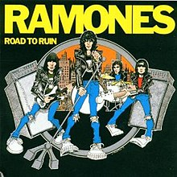

Bem Vindo, ( Login )

LED ZEPPELIN
Banda: Road to Ruin
Ano de lançamento: 22/09/1978
Gênero: Punk Rock
Descrição: Road to Ruin é o quarto álbum de estúdio da banda americana de punk rock Ramones, lançado em 22 de setembro de 1978, pela Sire Records como disco LP, cartucho de 8 faixas e fita cassete de áudio.[4] Foi o primeiro álbum dos Ramones a apresentar o novo baterista Marky Ramone, que substituiu Tommy Ramone. Tommy deixou a banda devido às baixas vendas de álbuns anteriores, bem como ao estresse que ele experimentou durante a turnê; no entanto, ele permaneceu na banda para produzir o álbum (creditado como T. Erdelyi) com Ed Stasium. O conceito da arte foi projetado pelo fã dos Ramones Gus MacDonald e posteriormente modificado por John Holmstrom para incluir Marky em vez de Tommy.
O álbum incorporou elementos musicais que eram menos proeminentes no punk rock, como solos de guitarra influenciados pelo heavy metal e baladas no estilo dos anos 1960. As músicas do Road to Ruin são consideradas por alguns como uma tentativa de dar mais airplay à banda. O álbum não vendeu tão bem quanto a banda esperava, chegando ao número 103 na Billboard 200, mais de 50 lugares atrás de seu antecessor, Rocket to Russia. No entanto, Road to Ruin vive décadas depois como um favorito dos fãs. "I Wanna Be Sedated", que teve um videoclipe de sucesso produzido quase uma década após seu lançamento, tornou-se uma das faixas mais conhecidas da banda, bem como sua segunda faixa mais transmitida no Spotify depois de "Blitzkrieg Bop". O álbum teve vários relançamentos com novos trabalhos do produtor Ed Stasium.
Depois que o álbum anterior da banda, Rocket to Russia, teve vendas fracas, o baterista Tommy Ramone deixou sua posição de apresentação para se concentrar principalmente na produção da banda. Depois que Tommy sugeriu que eles procurassem um novo baterista, eles começaram a procurar em clubes da cidade de Nova York. Enquanto estava no CBGBs, o baixista dos Ramones, Dee Dee Ramone, abordou Marc Bell (Marky Ramone) - que era seu amigo e já havia sido baterista do Richard Hell and the Voidoids - perguntando se ele estava interessado em se juntar aos Ramones. Um mês após esse encontro, o empresário Danny Fields pediu formalmente a Marky para fazer um teste para a banda. Cerca de vinte outros fizeram o teste para ser o baterista, embora Johnny, Joey e Dee Dee quisessem contratar Marky após suas apresentações de "I Don't Care" e "Sheena Is a Punk Rocker". Marky manteve-se próximo da técnica direta de Tommy, com um pouco mais de sofisticação técnica
Faixas: 1. I Just Want to Have Something to Do (2:42) 2. I Wanted Everything (3:18) 3. Don't Come Close (2:44) 4. I Don't Want You (2:26) 5. Needles and Pins (The Searchers cover) (2:21) 6. I'm Against It (2:07) 7. I Wanna Be Sedated (2:29) 8. Go Mental (2:42) 9. Questioningly (3:22) 10. She's the One (2:13) 11. Bad Brain (2:25) 12. It's a Long Way Back (2:20)